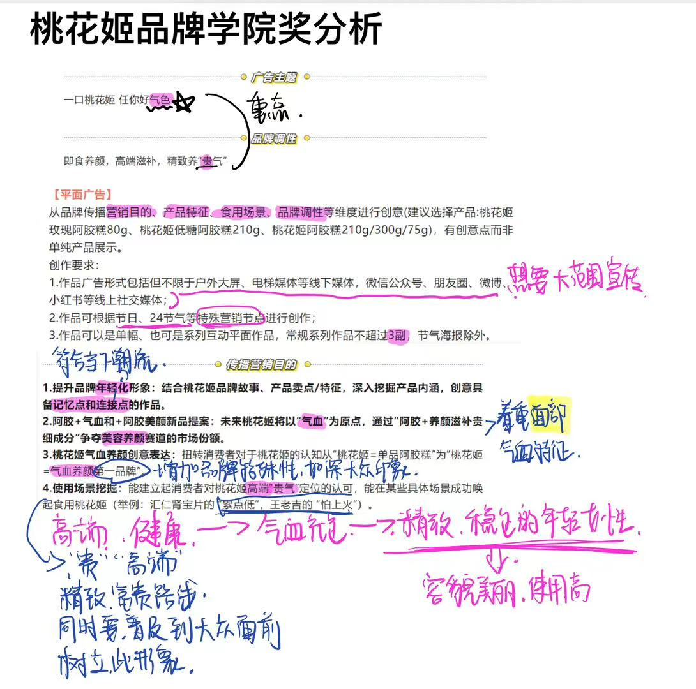
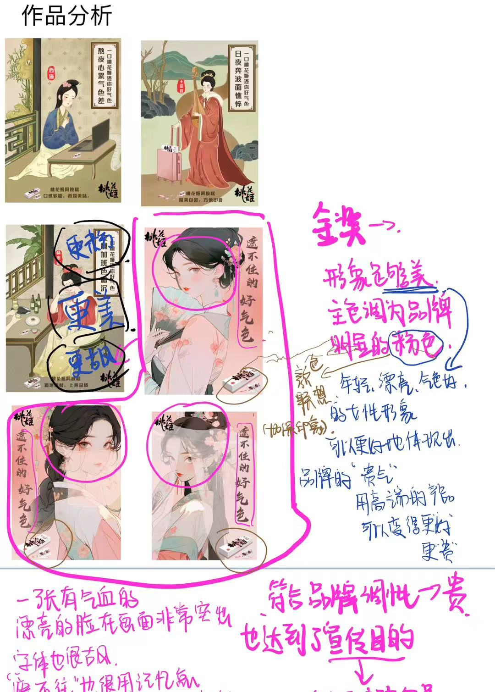
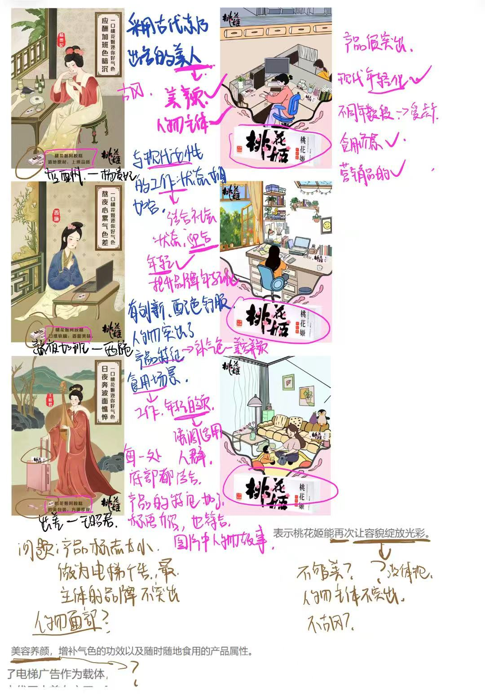
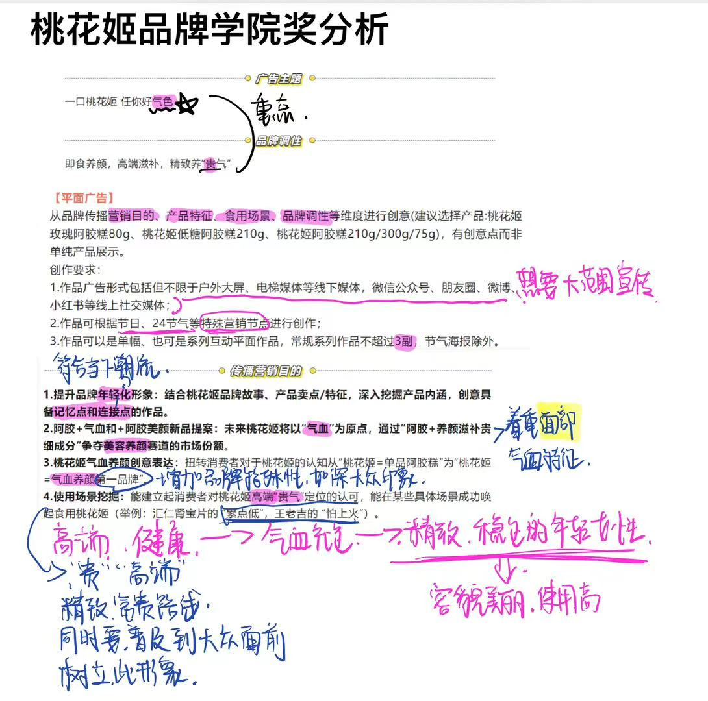
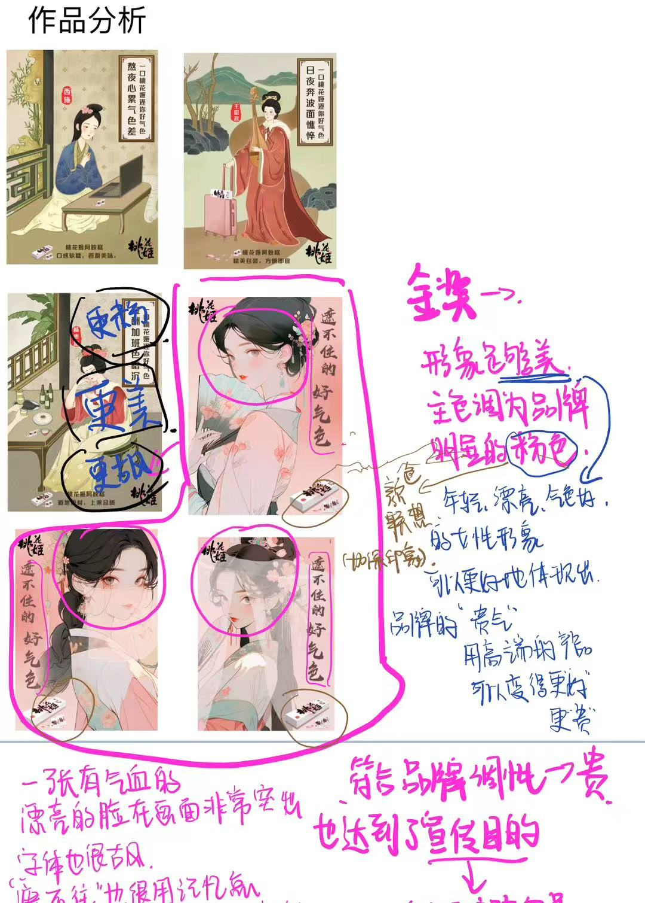
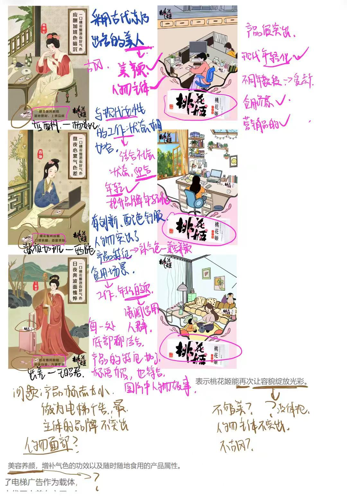

平面设计作品

 





学院奖桃花姬品牌获奖海报
1. 文化调研与灵感溯源
传统戏曲符号提炼：
从京剧脸谱的对称结构、唐代仕女图的面靥妆容中提取"柔美"与"华贵"基因，将脸谱轮廓与珠宝头饰（如点翠、珠钗）转化为现代设计语言
东方美学体系构建：
以"桃花"为视觉锚点，通过渐变粉色（Pantone 217C→258C）、花卉纹理与书法字体传递"温润典雅"的品牌气质，弱化传统医药产品的严肃感
2. 品牌策略与用户共情
精准定位分析：
锁定18-35岁年轻女性受众，结合"养颜""东方""女性化"品牌关键词，确定"内外兼修"的视觉传达目标——用"脸谱+珠宝"隐喻产品带来的"好气色"与"精致感"
3. 设计执行与技术创新
色彩系统设计：
主色选用粉色渐变，通过透明度叠加营造"梦幻感"，辅助色（如金棕）点缀珠宝细节，提升奢华氛围
图形创新方法论：
戏曲脸谱线条软化处理（圆润化边缘），保留对称与花纹基因；女性面部轮廓参考唐代"额饰""花钿"造型，头饰融合花朵、珠串与宝石
字体与排版实验：
定制书法字体笔画粗细变化（避免传统书法的沉重感），文案层级通过字号对比与竖排布局强化东方韵律
4. 创作背景深度解析
选题分析与方向锁定：
深度剖析"传统品牌年轻化"痛点，挖掘桃花姬"东方养颜"与年轻女性审美之间的文化断层。通过竞品分析（研究30+同类国潮设计），锁定"粉色微主题色+东方美学"作为差异化赛道。
历史女性形象研究：
以"面若桃花"为核心意象，选取京剧经典角色虞姬（刚柔并济的悲剧美学）与杜丽娘（反叛封建礼教的女性觉醒），通过两人形象传递当代女性"打破束缚、勇敢绽放"的精神内核。
传统文化现代化表达：
视觉符号转化：将虞姬的"霸王别姬"头饰（珠翠+红绸）与杜丽娘的"牡丹簪花"简化为几何化珠宝元素
动态感设计：图片2头饰的不对称飘带打破传统对称构图，隐喻女性力量的流动性。
品牌调性融合：
通过"面颊桃花花纹"具象化"服用桃花姬后气血充盈"的产品卖点，同时以"东方艳妆"文案强化古典与现代碰撞的视觉冲击力。
5. 文化叙事与设计创新
独立主导桃花姬品牌视觉升级项目，从30+历史女性形象中锁定虞姬与杜丽娘作为文化载体，通过解构京剧元素与"面若桃花"古典意象，成功传递"东方养颜"品牌调性，获XX设计大奖。
用户洞察与精准定位：
针对18-35岁女性受众，提出"传统戏曲符号现代化"策略，平衡文化厚重感与商业传播需求，提升品牌在年轻市场的认知度。
全流程设计执行力：
从选题分析到落地执行全程把控，熟练运用PS软件完成高精度插画与动态排版，擅长将传统文化符号转化为符合Z世代审美的视觉资产（如渐变色彩、几何化珠宝设计）。
跨领域知识整合：
融合京剧角色研究、色彩心理学与女性主义设计理论，增强设计的文化深度与社会价值共鸣。
树木保护系列——动态海报
植物系列作品浏览创作理念
我聚焦于"人与植物的共生关系"这一深刻主题，以树木为核心主体，传达保护树木、节约用纸与环境保护的核心思想。
视觉设计
画面整体采用平面插画风格，搭配简单鲜明的色彩，旨在以最直观、最纯粹的视觉语言引发观者的共鸣。背景以明亮的黄色为主调，营造出一种充满活力却又略带警示意味的氛围。前景部分，深绿色的竖条状图案形似树木的躯干，上面点缀着小巧的叶片，简洁而有力地勾勒出树木的形态。
文案设计
在画面的视觉中心偏上位置，"Tree conservation scheme"（树木保护计划）几个字母以手写字体的形式呈现，给人一种亲近且真实的感觉。下方依次排列着"Plan A""Plan B""Plan C""Plan D"等多个计划名称，每个名称旁边都被醒目的红色叉号标记，暗示着这些旨在保护树木的计划似乎都已停滞不前，或是尚未得到进一步的推进与落实。这种视觉呈现方式，引发观者对保护树木行动进展的反思。
动态效果
而在这些计划名称的下方，随着动态效果的呈现，仿佛纸张在被一台无形的碎纸机逐步销毁。每一片被销毁的纸张背后，都隐约浮现出一棵树木的轮廓，仿佛在诉说着：在我们随意浪费纸张的每一个瞬间，都有一棵树木正在遭受破坏。这一巧妙的动态设计，将纸张浪费与树木砍伐之间的因果关系直观地展现出来，提醒人们每一次对纸张的漠视，都是对树木生命的伤害。
主题升华
海报底部的文字"Behind every piece of paper you waste is the destruction of a tree's growth"（在你浪费的每一张纸背后，都是树木生长遭受的破坏），以一种沉重而有力的方式点明主题。而署名"people"（人们），则将责任直指每一个个体，强调保护树木、节约用纸是每个人义不容辞的责任。
《新青年》系列杂志——电子印章文创产品
创作过程阐述
本作品以中共一大纪念馆《新青年》系列杂志百年精神为内核，打造了一款可自定义的数字电子印章工具，旨在通过数字媒介实现历史符号与当代青年文化的创造性对话。
文化内核的数字化转译
从《新青年》杂志中提取关键视觉符号——泛黄纸张质感、复古铅字字体、民国雕版纹样，将其转化为数字设计元素库；同时融入现代设计语言，如动态粒子光效、透明图层叠加、自定义宣言输入框，构建"旧魂新形"的视觉体系。
双模式交互设计
经典复刻模板：一键调用"觉醒年代""科学之光"等十余款预设模板，内含杂志原版口号（如"民主""科学"）、复古铅字排版，适配短视频、朋友圈九宫格等场景，5-20元亲民定价降低体验门槛，快速为内容注入历史厚重感。
自由创想工坊：开放全功能设计界面，用户可混搭元素——从陈独秀手稿复刻标语到自定义个性宣言（如"真理无主"），调节透明度、叠加动态效果（文字逐字浮现/飞鸟掠影），甚至嵌入隐形数字指纹保护版权，80元起满足深度创作需求。
技术赋能的文化共鸣
内置AI智能推荐系统，基于用户图片色调与内容主题，自动匹配复古滤镜（如泛黄颗粒感）与文案组合（如"个性+独立"标语），同时提供付费解锁稀有素材库（民国科学仪器手绘、新文化运动版画），让百年前的"民主、科学、求真"精神转化为可触摸的数字符号。
跨时代价值的传递
通过水印的二次创作，用户既能以"新青年"身份与历史对话，又能在数字创作中彰显"自由、探索、自我定义"的当代态度，使《新青年》的革新精神在每一帧画面中延续，真正实现"以文创为桥，让精神在个体创作中焕活"。
桃花姬中秋节电商网页设计
设计概述
此"桃花姬国潮好礼"UI专题页，围绕节日礼品推广展开。色彩上，粉色柔美契合品牌，辅以金色显高端，营造节日氛围。
布局设计
布局呈垂直流线，顶部主题海报点明主旨，接着展示产品包装，直观呈现种类。中部会员权益板块突出特权，吸引用户。下方四款礼盒各有特色，方便挑选。
视觉元素
传统元素运用丰富，祥云背景、书法字体，增添国潮韵味，与品牌定位相符。整体通过多方面巧妙设计，成功吸引用户，激发购买欲。
视频创作
饺子——中国传统文化创新思考《饺子》视频作品浏览
本作品以中国传统节日"冬至"为创作背景，通过视频形式展现饺子这一传统美食背后的文化内涵。作品采用现代叙事手法，将传统习俗与当代生活场景相结合，突出饺子作为文化符号的象征意义。
创作过程中，我深入研究了冬至吃饺子的历史渊源，以及饺子在不同地区的文化差异。通过细腻的镜头语言和富有感染力的配乐，展现了饺子制作过程中的传统工艺之美，以及家人团聚时的温馨氛围。
作品特色在于将传统元素与现代视听语言相结合，通过快节奏的剪辑和富有张力的画面构图，让观众在欣赏美食的同时，感受到传统文化的魅力。同时，作品也探讨了在快节奏的现代生活中，如何保持和传承这些珍贵的文化传统。
敦煌——AI赋能文化遗产传播《敦煌》视频作品浏览
本作品是我首次系统探索AI视频生成技术在传统文化叙事中的创新应用，全面负责视频生成到后期初剪的全流程创作。作品构建了现代修复师穿越时空向北魏画师乐僔及九色鹿学习传统技艺的叙事框架，通过AI分层生成技术实现历史场景与工艺流程的精准还原。
创作难点在于平衡生成效率与历史真实性。通过建立传统文化数据库，将专业术语转化为AI可理解的视觉描述，实现修复动作与工具使用的精准生成。最终作品在AI高效创作下，仍保持专业级视觉还原与叙事流畅性，验证了AI赋能文化遗产传播的潜力。

圆明园——历史记忆创新重现《圆明园》视频作品浏览
本作品以圆明园的兴衰史为叙事主线，结合"BE美学"与"纯爱战神"的流行文化概念，通过视频与文字的双重载体，完成一场跨越时空的情感对话。
内容架构分为三部分：
"BE之路"——以悲剧美学视角解构圆明园的历史伤痕。通过英法联军与八国联军的两次劫难，以"暴行""耻辱"等关键词强化民族集体记忆，呼应古希腊悲剧中"不可抗力的残酷美感"。
"纯爱战神"——将个体对祖国的情感升华为"纯粹的双向奔赴"。视频中拟通过对比圆明园昔日的辉煌与今日的残垣，激发观众对文物归国、民族复兴的深切渴望，诠释"爱国"作为最极致的纯爱。
"OE到HE"——提出开放结局的展望。技术手段（如数字复原）与国民信念成为扭转BE的关键，暗示历史悲剧终将在持续进步中迈向HE，但需始终铭记"故事开端的悲剧性"。
创作特色：
文化符号重构：用"BE美学"消解宏大叙事的沉重感，以"纯爱战神"拉近青年与历史的情感距离。
情感张力营造：视频中拟运用废墟影像与数字复原画面的交替剪辑，形成历史悲怆与未来希冀的强烈对比。

《新青年》系列杂志——电子印章文创产品视频展示《新青年》视频作品浏览
创作过程阐述
本作品以中共一大纪念馆《新青年》系列杂志百年精神为内核，打造了一款可自定义的数字电子印章工具，旨在通过数字媒介实现历史符号与当代青年文化的创造性对话。
文化内核的数字化转译：
从《新青年》杂志中提取关键视觉符号——泛黄纸张质感、复古铅字字体、民国雕版纹样，将其转化为数字设计元素库；同时融入现代设计语言，如动态粒子光效、透明图层叠加、自定义宣言输入框，构建"旧魂新形"的视觉体系。
双模式交互设计：
经典复刻模板：一键调用"觉醒年代""科学之光"等十余款预设模板，内含杂志原版口号（如"民主""科学"）、复古铅字排版，适配短视频、朋友圈九宫格等场景，5-20元亲民定价降低体验门槛，快速为内容注入历史厚重感。
自由创想工坊：开放全功能设计界面，用户可混搭元素——从陈独秀手稿复刻标语到自定义个性宣言（如"真理无主"），调节透明度、叠加动态效果（文字逐字浮现/飞鸟掠影），甚至嵌入隐形数字指纹保护版权，80元起满足深度创作需求。
技术赋能的文化共鸣：
内置AI智能推荐系统，基于用户图片色调与内容主题，自动匹配复古滤镜（如泛黄颗粒感）与文案组合（如"个性+独立"标语），同时提供付费解锁稀有素材库（民国科学仪器手绘、新文化运动版画），让百年前的"民主、科学、求真"精神转化为可触摸的数字符号。
跨时代价值的传递：
通过水印的二次创作，用户既能以"新青年"身份与历史对话，又能在数字创作中彰显"自由、探索、自我定义"的当代态度，使《新青年》的革新精神在每一帧画面中延续，真正实现"以文创为桥，让精神在个体创作中焕活"。